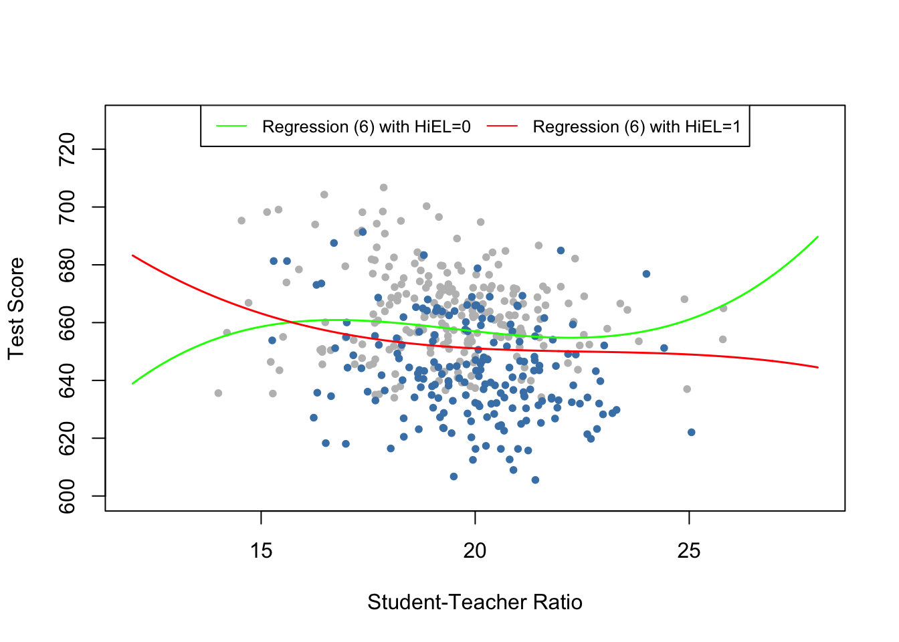

8.4 Nonlinear Effects on Test Scores of the Student-Teacher Ratio
In this section we will discuss three specific questions about the relatin between test scores and the student-teacher ratio:
Does the effect on test scores of decreasing the student-teacher ratio depend on the fraction of english learners when we control for economic idiosyncracies of different districts?
Does this effect depend on the the student-teacher ratio?
How strong is the effect of decreasing the student-teacher ratio (by two students per teacher) if we take into account economic characteristics and nonlinearities?
Two answer these questions we will consider a total of seven models, some of which are nonlinear regression specifications of the types that have been discussed before. As measures for the students’ economic backgrounds, we will additionally consider the regressors \(lunch\) and \(\ln(income)\). We use the logarithm of \(income\) because the analysis discussed in chapter 8.2 showed that the nonlinear relationship between \(income\) and \(TestScores\) is approximately logarithmic. We do not include expenditures per pupil (\(expenditure\)) because doing so allows the expenditures to vary with the student-teacher ratio, see chapter 7.2.
Nonlinear Regression Models of Test Scores
The considered model specifications are:
\[\begin{align} \widehat{TestScore_i} =& \, \beta_0 + \beta_1 size_i + \beta_4 english_i + \beta_9 lunch_i + u_i \\ \\ \widehat{TestScore_i} =& \, \beta_0 + \beta_1 size_i + \beta_4 english_i + \beta_9 lunch_i + \beta_{10} \ln(income_i) + u_i \\ \\ \widehat{TestScore_i} =& \, \beta_0 + \beta_1 size_i + \beta_5 HiEL_i + \beta_6 (HiEL_i\times size_i) + u_i \\ \\ \widehat{TestScore_i} =& \, \beta_0 + \beta_1 size_i + \beta_5 HiEL_i + \beta_6 (HiEL_i\times size_i) + \beta_9 lunch_i + \beta_{10} \ln(income_i) + u_i \\ \\ \widehat{TestScore_i} =& \, \beta_0 + \beta_1 size_i + \beta_2 size_i^2 + \beta_5 HiEL_i + \beta_9 lunch_i + \beta_{10} \ln(income_i) + u_i \\ \\ \widehat{TestScore_i} =& \, \beta_0 + \beta_1 size_i + \beta_2 size_i^2 + \beta_3 size_i^3 + \beta_5 HiEL_i + \beta_6 (HiEL\times size) \\ &\,+ \beta_7 (HiEL_i\times size_i^2) + \beta_8 (HiEL_i\times size_i^3) + \beta_9 lunch_i + \beta_{10} \ln(income_i) + u_i \\ \\ \widehat{TestScore_i} =& \, \beta_0 + \beta_1 size_i + \beta_2 size_i^2 + \beta_3 size_i^3 + \beta_4 english + \beta_9 lunch_i + \beta_{10} \ln(income_i) + u_i \end{align}\]# Estimate all models
TestScore_mod1 <- lm(score ~ size + english + lunch, data = CASchools)
TestScore_mod2 <- lm(score ~ size + english + lunch + log(income), data = CASchools)
TestScore_mod3 <- lm(score ~ size + HiEL + HiEL:size, data = CASchools)
TestScore_mod4 <- lm(score ~ size + HiEL + HiEL:size + lunch + log(income),
data = CASchools)
TestScore_mod5 <- lm(score ~ size + I(size^2) + I(size^3) + HiEL + lunch + log(income),
data = CASchools)
TestScore_mod6 <- lm(score ~ size + I(size^2) + I(size^3) + HiEL + HiEL:size +
HiEL:I(size^2) + HiEL:I(size^3) + lunch + log(income), data = CASchools)
TestScore_mod7 <- lm(score ~ size + I(size^2) + I(size^3) + english + lunch +
log(income), data = CASchools)Next, we may use summary() to assess the models. Using stargazer() we may also obtain a LATEX-based tabular representation of all regression outputs and which is more convenient for comparison of the models.
# generate a latex table of regression outputes
stargazer(TestScore_mod1, TestScore_mod2, TestScore_mod3, TestScore_mod4, TestScore_mod5,
TestScore_mod6, TestScore_mod7, column.labels = c("(1)", "(2)", "(3)", "(4)",
"(5)", "(6)", "(7)"))| Dependent variable: | |||||||
| score | |||||||
| (1) | (2) | (3) | (4) | (5) | (6) | (7) | |
| size | -1.00*** | -0.73*** | -0.97* | -0.53* | 64.34** | 83.70*** | 65.29** |
| (0.24) | (0.23) | (0.54) | (0.30) | (25.46) | (29.69) | (25.48) | |
| english | -0.12*** | -0.18*** | -0.17*** | ||||
| (0.03) | (0.03) | (0.03) | |||||
| I(size2) | -3.42*** | -4.38*** | -3.47*** | ||||
| (1.29) | (1.51) | (1.29) | |||||
| I(size3) | 0.06*** | 0.07*** | 0.06*** | ||||
| (0.02) | (0.03) | (0.02) | |||||
| lunch | -0.55*** | -0.40*** | -0.41*** | -0.42*** | -0.42*** | -0.40*** | |
| (0.02) | (0.03) | (0.03) | (0.03) | (0.03) | (0.03) | ||
| log(income) | 11.57*** | 12.12*** | 11.75*** | 11.80*** | 11.51*** | ||
| (1.74) | (1.77) | (1.73) | (1.75) | (1.73) | |||
| HiEL | 5.64 | 5.50 | -5.47*** | 816.08* | |||
| (16.72) | (9.14) | (1.03) | (434.61) | ||||
| size:HiEL | -1.28 | -0.58 | -123.28* | ||||
| (0.84) | (0.46) | (66.35) | |||||
| I(size2):HiEL | 6.12* | ||||||
| (3.35) | |||||||
| I(size3):HiEL | -0.10* | ||||||
| (0.06) | |||||||
| Constant | 700.15*** | 658.55*** | 682.25*** | 653.67*** | 252.05 | 122.35 | 244.81 |
| (4.69) | (7.68) | (10.51) | (8.89) | (165.82) | (192.18) | (165.93) | |
| Observations | 420 | 420 | 420 | 420 | 420 | 420 | 420 |
| R2 | 0.77 | 0.80 | 0.31 | 0.80 | 0.80 | 0.80 | 0.80 |
| Adjusted R2 | 0.77 | 0.79 | 0.31 | 0.79 | 0.80 | 0.80 | 0.80 |
| Residual Std. Error | 9.08 (df = 416) | 8.64 (df = 415) | 15.88 (df = 416) | 8.63 (df = 414) | 8.56 (df = 413) | 8.55 (df = 410) | 8.57 (df = 413) |
| F Statistic | 476.31*** (df = 3; 416) | 405.36*** (df = 4; 415) | 62.40*** (df = 3; 416) | 325.80*** (df = 5; 414) | 277.21*** (df = 6; 413) | 185.78*** (df = 9; 410) | 276.52*** (df = 6; 413) |
| Note: | *p<0.1; **p<0.05; ***p<0.01 | ||||||
Let us summarize what can be concluded from the table above:
First of all, it is apparent that the student-teacher ratio is statistically significant in all seven models. Adding \(\ln(income)\) to model (1) we find that the corresponding coefficient is statistically significant at the level of \(1\%\) while all other coefficients remain at their significance level. Furthermore, the estimate for the coefficient on \(size\) is roughly \(0.27\) points larger which could be a sign of attenuated omitted variable bias. We consider this a reason to include \(\ln(income)\) as a regressor in other models, too.
Regressions (3) and (4) are regression that aim to assees the effect of allowing for an interaction between \(size\) and \(HiEL\), without and with economic control variables. In both modesl, the interaction term and the dummy are not statistically significant. Thus, even with economic control variables we cannot the reject the null hypothesis, that the effect of the student-teacher ratios on test scores is the same for districts with high and districts with low share of english learning students.
Regression (5) includes a cubic term for the student-teacher ratio and omittes the interaction between \(size\) and \(HiEl\). The estimation results indicate that there is a nonlinear effect of the student-teacher ratio on test scores. (Can You verify this using an \(F\)-test of \(H_0: \beta_2=\beta_3=0\)?)
Consequently, regression (6) further explores whether the fraction of english learners is also accountable for the effect of the student-teacher ration by using \(HiEL \times size\) and the interactions \(HiEL \times size^2\) and \(HiEL \times size^3\). All individual \(t\)-tests indicate that that there are significant effects. We check this using a robust \(F\)-test of \(H_0: \beta_6=\beta_7=\beta_8=0\).
# check joint significance of interactions
linearHypothesis(TestScore_mod6,
c("size:HiEL=0", "I(size^2):HiEL=0", "I(size^3):HiEL=0"),
vcov. = vcovHC(TestScore_mod6, type = "HC1")
)## Linear hypothesis test
##
## Hypothesis:
## size:HiEL = 0
## I(size^2):HiEL = 0
## I(size^3):HiEL = 0
##
## Model 1: restricted model
## Model 2: score ~ size + I(size^2) + I(size^3) + HiEL + HiEL:size + HiEL:I(size^2) +
## HiEL:I(size^3) + lunch + log(income)
##
## Note: Coefficient covariance matrix supplied.
##
## Res.Df Df F Pr(>F)
## 1 413
## 2 410 3 2.6903 0.04597 *
## ---
## Signif. codes: 0 '***' 0.001 '**' 0.01 '*' 0.05 '.' 0.1 ' ' 1We find that the null can be rejected at the level of \(5\%\) and conclude that the regression function differs for districts with high and low percentage of english learners.
Specification (7) uses a continuous measure for the share of english learners instead of a dummy variable (and thus omitts the interaction terms). We observe only small changes to the coefficient estimates on the other regressors and thus conclude that the results observed for specification (5) are not sensitive to the way the percentage of english learners is measured.
We continue by reproducing figure 8.10 of the book using R for interpretation of the nonlinear specifications (2), (5) and (7).
# scatterplot
plot(CASchools$size,
CASchools$score,
xlim = c(12,28),
ylim = c(600,740),
pch=20,
col="gray",
xlab="Student-Teacher Ratio",
ylab = "Test Score")
# add a legend
legend("top",
legend = c("Linear Regression (2)","Cubic Regression (5)", "Cubic Regression (7)"),
cex = 0.8,
ncol = 3,
lty = c(1,1,2),
col = c("blue","red","black")
)
# data for use with predict()
new_data <- data.frame("size"=seq(16,24,0.05),
"english"=mean(CASchools$english),
"lunch"=mean(CASchools$lunch),
"income"=mean(CASchools$income),
"HiEL"=mean(CASchools$HiEL)
)
# add estimated regression function for model (2)
fitted <- predict(TestScore_mod2, newdata = new_data)
lines(new_data$size,
fitted,
lwd=1.5,
col="blue")
# add estimated regression function for model (5)
fitted <- predict(TestScore_mod5, newdata = new_data)
lines(new_data$size,
fitted,
lwd=1.5,
col="red")
# add estimated regression function for model (7)
fitted <- predict(TestScore_mod7, newdata = new_data)
lines(new_data$size,
fitted,
col="black",
lwd=1.5,
lty=2)
Note that for the figure above all regressors except for \(size\) are set to their sample averages. We see that the cubic regressions (5) and (7) are almost identical. They indicate that the relation between test scores and the student-teacher ratio has only a small amount of nonlinearity since they do not deviate much from the regression function of (2).
The next code chunk reproduces figure 8.11 of the book. We use plot() and points() to color observations depending on \(HiEL\). Again, the regression lines are drawn based on predictions using average sample averages of all regressors except for \(size\).
# scatterplot
# observations with HiEL = 0
plot(CASchools$size[CASchools$HiEL==0],
CASchools$score[CASchools$HiEL==0],
xlim = c(12,28),
ylim = c(600,730),
pch=20,
col="gray",
xlab="Student-Teacher Ratio",
ylab = "Test Score")
# observations with HiEL = 1
points(CASchools$size[CASchools$HiEL==1],
CASchools$score[CASchools$HiEL==1],
col="steelblue",
pch=20)
# add a legend
legend("top",
legend = c("Regression (6) with HiEL=0", "Regression (6) with HiEL=1"),
cex = 0.8,
ncol = 2,
lty = c(1,1),
col = c("green","red")
)
# data for use with predict()
new_data <- data.frame("size"=seq(12,28,0.05),
"english"=mean(CASchools$english),
"lunch"=mean(CASchools$lunch),
"income"=mean(CASchools$income),
"HiEL"=0
)
# add estimated regression function for model (6) with HiEL=0
fitted <- predict(TestScore_mod6, newdata = new_data)
lines(new_data$size,
fitted,
lwd=1.5,
col="green")
# add estimated regression function for model (6) with HiEL=1
new_data$HiEL=1
fitted <- predict(TestScore_mod6, newdata = new_data)
lines(new_data$size,
fitted,
lwd=1.5,
col="red")
From the regression output we see that (6) finds statistically significant coefficients on the interaction terms \(HiEL:size\), \(HiEL:size^2\) and \(HiEL:size^3\) i.e. there is evidence that the nonlinear relationship connecting test scores and student-teacher ration depends on the amount of English learning students in the district. However, the figure shows that this difference
One might be tempted to object since both functions show opposing slopes for student-teacher ratios below \(15\) and beyond \(24\). Two things can be set aginst that:
The data has only few observations with low and high values of the student-teacher ratio so there is only little information to be exploited when estimating the model. This means the estimated function is less precise in the extremes of the dataset
Such a behaviour is a typical caveat when using cubic functions since they generally show extreme behaviour for extreme observations. Think of the graph of \(f(x) = x^3\).
We thus conclude that there is no dependence of the relation between class size and test scores on the percentage of English learners in the district.
Summary
We are now able to answer the three question posed at the beginning of this section.
Considering the linear models, the percentage of English learners has only little influence on the effect of test scores of changing the student-teacher ratio. This result keeps valid if we control for economic background of the students. While the cubic specification (6) provides evidence, the strength of the effect is negligible.
When controlling for the students’ economic backgroumd we find evidence of nonlinearities in the relationship between student-teacher ratio and test scores.
The linear specification (2) predicts that a reduction of the student-teacher ratio by two students per teacher leads to an improvement in test scores of about \(-0.73 \times (-2) = 1.46\) points. Since the model is linear, this effect is independent of the class size. Asssume that the student-teacher ratio is \(20\). For example, model (5) predicts that the reduction increases test scores by \[64.33*18+18^2*(-3.42)+18^3*(0.059) - (64.33*20+20^2*(-3.42)+20^3*(0.059)) \approx 3.3\] points. if the ratio is \(22\), a reduction to \(20\) leads to a predicted improvement in test scores of \[64.33*20+20^2*(-3.42)+20^3*(0.059) - (64.33*22+22^2*(-3.42)+22^3*(0.059)) \approx 2.4\] points. This suggests that the effect is stronger in smaller classes.